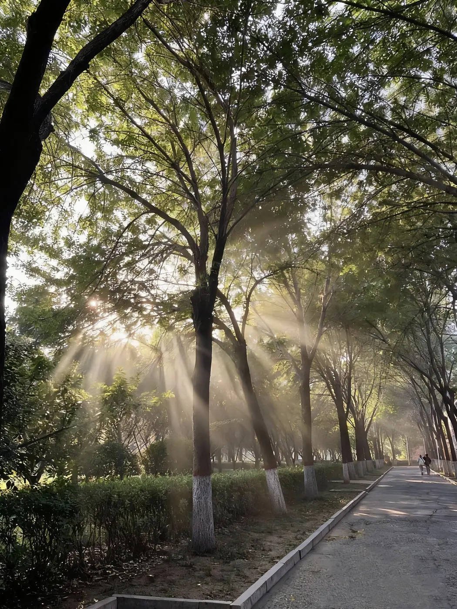
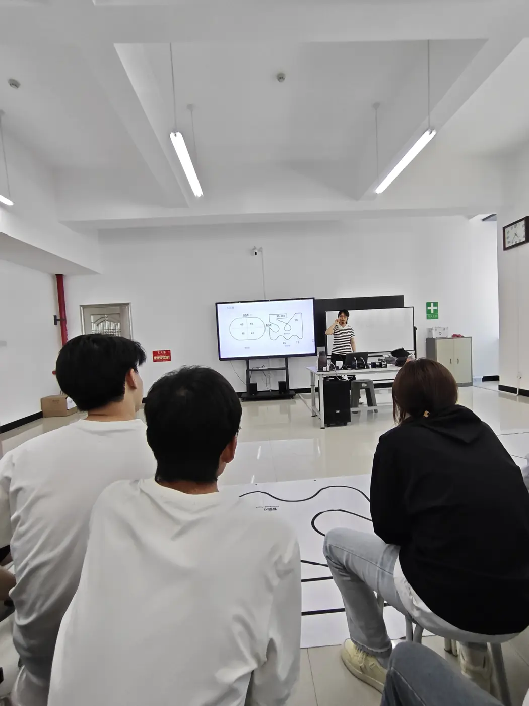
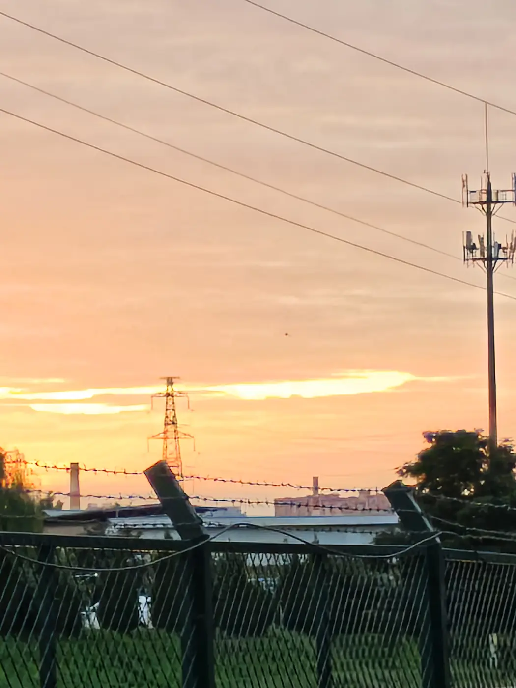
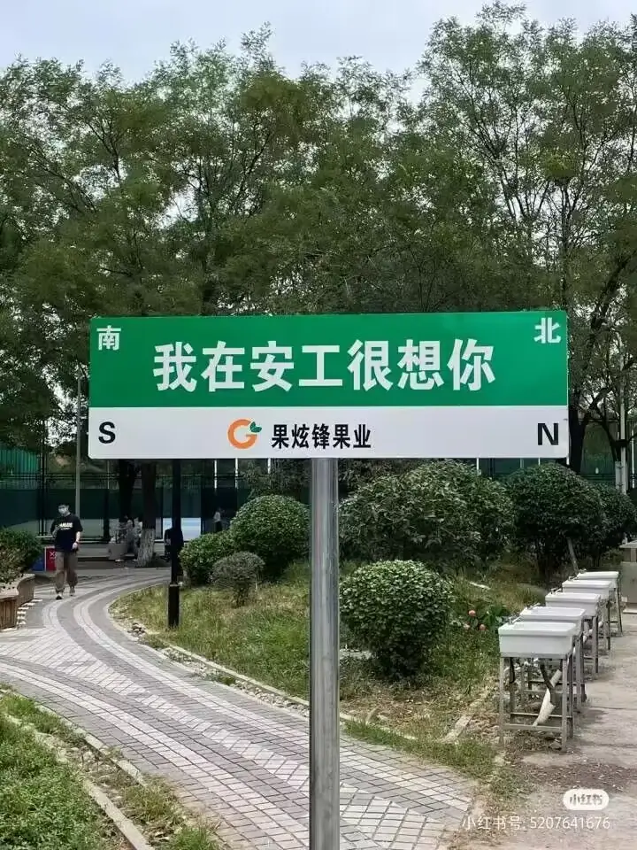
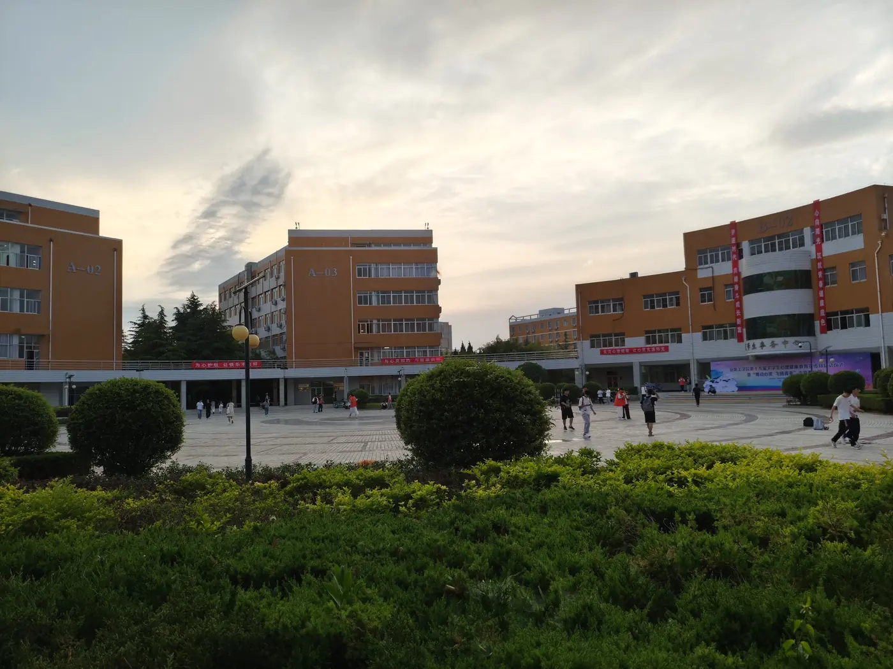

2026 FRESHMAN PORTAL · V2.6非学校官方
把第一次到安工，
提前过一遍。
从选宿、报到到军训和第一顿饭，先用真实资料与在校经历回答；不确定的，明确告诉你不确定。
大家正在问
60个真实问题
14组校园实拍
0次强制注册
南大门第一次见面，从这里开始

真实不是样板图
是正在发生的校园生活
是正在发生的校园生活
新生服务台ONE STOP CAMPUS HUB
不用翻群聊，
常用的都在这里。
新生公告选宿按学院分批开放，具体楼栋与床位以易校园实际显示为准。
学校官方入口VERIFIED LINKS
需要办事，
请走官方渠道。
✓以下链接已于 2026-08-12 检查可访问。账号、密码、验证码只在学校官方页面输入。
01
安阳工学院官网新闻、通知与学校信息
↗
02智慧安工应用中心校内应用统一入口
↗
03网上办事大厅校内事项与流程
↗
04VR全景云游在线查看校园实景
↗
05官方校园风光校门、教学楼与校园景观
↗
06学校简介办学概况与数据
↗
本站提供的是整理与导航，不代替学校发布。动态政策、缴费、学籍和正式事务以官方页面最新内容为准。
先按阶段找YOUR JOURNEY
你现在，走到哪一步了？
不必从头读攻略。点进正在发生的那一步，直接找答案。
常学长即时问答CURATED ANSWERS · CLEAR SOURCES
像问学长一样问，
但每句话都有边界。
从60个经过整理的真实问题中匹配回答，并清楚标出来源、核验时间与适用范围；涉及动态政策和个人事项时，会提醒你进一步复核。
✓
官方资料给出处、日期和适用范围
◎
一手经历不把一个人的宿舍说成全校
?
动态待核没发布的安排绝不猜
今天 · 第一次见面
V2.6 正式版 · 回答附来源与适用范围 · 请勿输入身份证、学号或银行卡信息
真实问题库60 QUESTIONS · 97 POSTS REVIEWED
新生真正会问的，
都摊开给你看。
已交叉参考启动包知识库与97篇审核作品；内容经验与官方事实分开标注，不用你提前知道“该问什么”。
⌕暂时没找到同名问题
换一个关键词，或者直接在上面的对话框里问。
这是真的安工CAMPUS, UNFILTERED
攻略会过期，
生活正在发生。
这些不是图库素材。是学校道路、宿舍、餐厅、军训、实训和傍晚的体育场。




求索广场 · 摄于安工为什么做这个FROM YICHEN
“我想把自己踩过的坑、核验过的资料，变成新生第一次需要时就能找到的答案。”
常学长是安阳工学院2024级机械专业学生。这不是学校官方站，也不包装成“全知AI”；它更像一本会回应你的校园手册。
01先解决问题
能安全讲清的公共事实，不故意藏答案来换微信。
02不确定就标出来
动态政策、宿舍分配和个体判断，以官方最新通知为准。
03只在需要时找真人
付款、售后、权益和隐私问题，才进入人工承接。